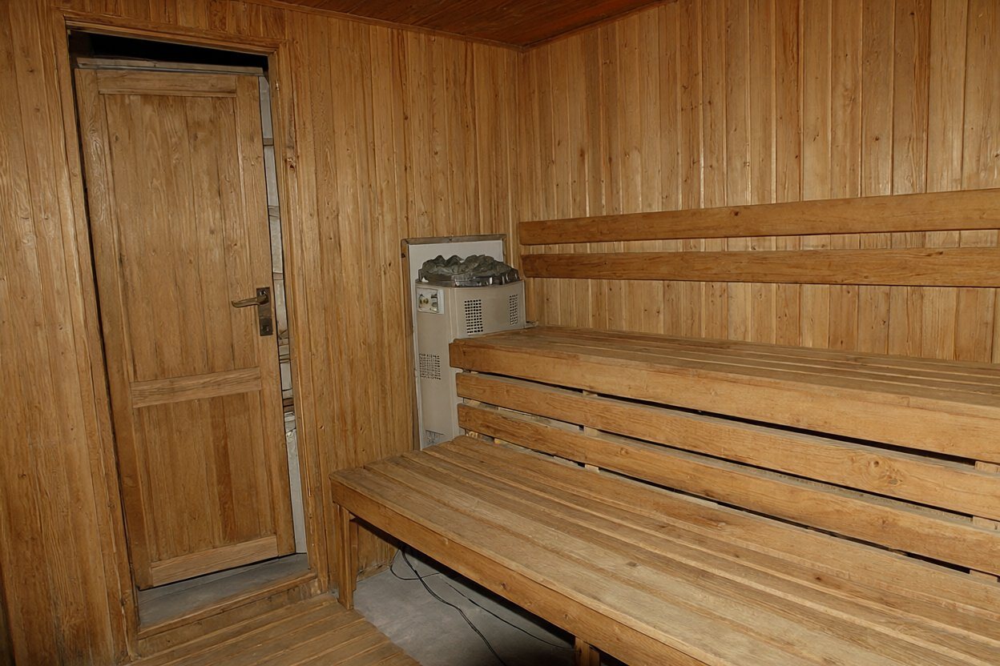

Огляд розпочато о 09 год. 50 хв. Огляд закінчено о 11 год. 20 хв.
Слідчий Чугуївського РВ ГУМВС України в Харківській області капітан міліції Ярошенко О.М., у присутності понятих: 1) Кравець Людмила, 1960 р.н., адміністраторка б/в «Тиха заводь»; 2) Гнатюк Микола Петрович, 1944 р.н., охоронець б/в «Тиха заводь», за участю експерта-криміналіста Данилюка С.Г., на підставі повідомлення гр. Кравця В.І., що надійшло до чергової частини о 08 год. 58 хв., про виявлення трупа, провів огляд місця події в в приміщенні лазні.
Погодні умови: хмарно, туман, +3 °C. Лазня — одноповерхова дерев'яна будівля на березі ставка, на території бази. Складається з передбанника, кімнати відпочинку й парилки. Двері та вікна лазні цілі, слідів злому не виявлено.
У передбаннику — вішаки, лавка, речей немає. У кімнаті відпочинку: стіл, уздовж стіни дубова лава, вішак із гачками. На столі — дві пляшки мінеральної води «Миргородська» (початі), попільничка з недопалками. На вішаку — махровий халат білого кольору, у кишені якого виявлено мобільний телефон Nokia, номер (067) 541-90-13; телефон вилучено, опечатано.
Двері парилки відчиняються назовні, у бік кімнати відпочинку, зачинені, не замкнені, замків і засувів не мають. У парилці — електрокам'янка, ввімкнена, термостат на позначці «110» (максимум). Температура повітря в парилці під час огляду не вимірювалась. На нижній полиці лежить труп чоловіка у білому простирадлі, з ознаками дії високої температури. На лівому зап'ясті — світла смуга (слід від браслета годинника); годинника на тілі й у приміщенні лазні не виявлено.
Особу померлого встановлено за документами з котеджу № 5 і зі слів гр. Кравця В.І. — Головко Віктор Миколайович, 1961 р.н., мешканець м. Харкова (Помірки, Сосновий пров., 7), гість бази. Кам'янку відключено від мережі слідчим о 10 год. 05 хв. Тіло після огляду направлено до обласного бюро СМЕ.
З 10 год. 40 хв. до 11 год. 10 хв. оглянуто котедж № 5 (за словами адміністраторки, проживав гр. Головко В.М. з супутницею). Речі, виявлені в котеджі, описано окремо (додаток № 1). Жіночих речей в котеджі не виявлено.
Заяв і зауважень від учасників огляду не надійшло. Протокол прочитано вголос, встановлено що встановлено, з його змістом учасники згодні.

| № | Предмет | Примітка |
|---|---|---|
| 1 | Джинси чоловічі, сині | на спинці стільця |
| 2 | Піджак чоловічий, темно-сірий, шерстяний | на плічках у шафі; у кишенях — серветки, запальничка |
| 3 | Сорочка чоловіча, біла | — |
| 4 | Посвідчення водія на ім'я Головко В.М. | у внутрішній кишені піджака |
| 5 | Ключі від автомобіля «Toyota» з брелоком сигналізації, 1 в'язка | на тумбочці |
| 6 | Взуття чоловіче, шкіряне, чорне, розмір 43 | біля входу |
| 7 | Дорожня сумка чоловіча, темна, з білизною й гігієнічним набором | на підлозі, розкрита |
Гаманця, грошових коштів, золотих виробів не виявлено.
Опис склав слідчий Ярошенко О.М. в присутності понятих. Опис із переліком речей, названим родичами, не звірявся (родичів не опитувано).